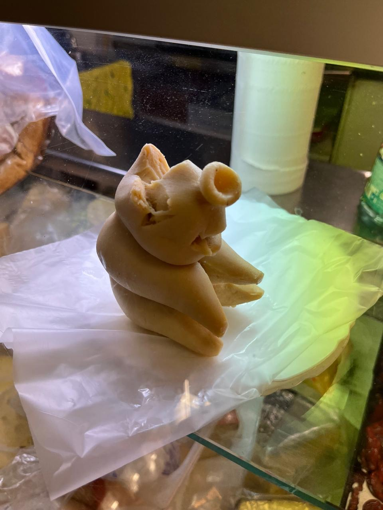

IV Volume IV · A special edition
Pig Man Fat
PMF
A tall tale about a thin pig, a wolf, a jackal and the last pat of fat in a district that did not exist. It is told once in full, then retold twelve times to show what tellings do to a story.

- Name
- Pig Man Fat, shortened to PMF
- Afrikaans
- Varkman Vet, coined for this tale from three ordinary words
- Where
- Smeerkloof, a dorp that never existed, in a district that is not named
- When
- The year the dams cracked
- Kind
- Trickster tale, with a refrain
- Kin
- Br’er Rabbit and the briar patch; Jakkals en Wolf
- Status
- Invented for Edition IX. No source exists.
XV The Legend
How Pig Man Fat was rendered
Fiction, start to finish. Told the way the tellers of Smeerkloof tell it, which is with a straight face.
Nobody agrees where Smeerkloof was, which is how you know it was somewhere. The tellers agree on the rest.
The year the dams cracked
In the year the dams cracked, everything in Smeerkloof went thin: the sheep, the sermons, the dog under the shop stoep. The shop had one glass case, and in the case, for the whole of the drought, lay one pat of fat. It was the last fat in the district. Hen kept the shop and the key. She left the watching of the case to Pig Man, because he was the thinnest pig anyone had seen, a long grey post of an animal who walked upright in one waistcoat and was never seen to hurry. A pig with no appetite, Hen reasoned, was the right guard for a pat of fat.
Wolf and Jackal
Wolf and Jackal heard about the pat from the dog under the stoep, who told it for a bone. Jackal did the planning in that partnership and Wolf did the eating. The arrangement had lasted for years because Jackal never mentioned which of them was in charge. The plan was short: catch the guard, boil the guard, eat the pat in the quiet afterwards. Wolf liked the plan because it had a pot in it.
They caught Pig Man on the shop stoep at dusk, asleep and folded in half, and Wolf sat on him.
The begging
“Boil me. I have heard worse. Roast me, salt me, drop me down the longdrop, and I will hold my breath through all of it. But do not, Wolf, whatever you do, set me in that glass case with a card in front of me. Anything but the glass case.” Pig Man Fat, in every telling, invented
Jackal narrowed an eye. Jackal had heard, from a goat who had it from a crow who had it from further north, about a rabbit and a briar patch, and the goat had been plain about what happened to the fox. “He wants the case,” said Jackal. “Careful.”
“A rabbit is a rabbit,” said Wolf. “This is a pig. Nobody begs that hard for what he wants.” He was wrong, as he was about most things, but he was wrong with such confidence that it carried him a long way into a drought.
Rendering
Wolf melted the last pat in the three-legged pot, because he could not stand to see the pot idle, and poured it into a mould. He made the mould by pressing Pig Man into a tray of cold ash, which Pig Man allowed, being tied. When the fat set there was a small, pale, pinched figure of Pig Man: snout up, one ear curled, the face creased as if it had just heard something. Wolf set the figure in the glass case. He wrote a card in his own hand and propped it in front.
This is all that was ever in him.
Wolf meant it as an insult. He placed the case where the whole of Smeerkloof would pass it on the way to the water queue. Then he tied Pig Man to the stoep rail with a bootlace and went inside to enjoy the quiet. Pig Man had been out of the bootlace before the pot cooled.
What the valley did
By the second morning the water queue had stopped to read the card. By the third, someone had added a line beneath it. By the fourth the line had a rhyme in it, the rhyme had a refrain, and children were singing the refrain at the dogs. Nobody in Smeerkloof had told a story for weeks, because nothing had happened to tell. Now there was a pat of fat that looked like a pig who looked like a man, and a whole valley starved of everything else fed on it.
Who sits in the glass? Pig Man Fat.
What did Wolf want? Pig Man Fat.
Who got bigger each time you told it back? Pig Man Fat! The refrain, as sung at the dogs, invented
The wrong end of the knife
Wolf stood guard over the case for the rest of the drought to prove it held only a pat. That meant he heard every telling, and he corrected each one aloud, which did the legend more good than any storyteller could have done. A legend wants an argument. When Wolf said the figure was the size of a fist, the valley said a loaf. When he said it was fat, they said it was something finer. He tried a knife on it once, and the tellers say the pig came out bigger where it was cut. By the time the rains returned, Pig Man Fat was the largest thing in Smeerkloof, and nothing Wolf said made the figure in the case any smaller.
Where Pig Man went
He walked out the first night with the bootlace in his hand and was seen afterwards in several districts, thin as ever, heading for nowhere in particular. Jackal had watched him go and said nothing. Jackal went north that winter and told the briar-patch story to anyone who would stand still, with an extra chapter about a pig. Hen kept the case and the key. When people ask what is in it, she reads them the card.
What the name means
He was Pig Man because he was a pig who walked like a man. He was Fat because of what he did with the pat: the only pig on record to put on weight by being talked about. The Afrikaans tellers call him Varkman Vet, and the English ones shorten that to PMF. In Smeerkloof you say it when something small turns out bigger than the people who tried to finish it.
The tellers disagree about the figure's material. Most say fat. Some say dough, one said marzipan, and a stubborn minority say the question is rude. The photograph at the head of this volume settles none of it.
XVI The Retelling
Tell it again
The tale says the pig grew with every telling. This instrument lets you check. Move along twelve invented tellers and watch the figure in the case, and the version of the story, grow.
Teller
- Size, as told
- Words shared with the first telling
The tellers, the sizes and the sentences are all invented. The one real number is the last one: it counts how many different words in the first telling still appear in the telling you are looking at, a plain word-for-word overlap, worked out in your browser.
XVII Kin
The real things behind a made-up pig
Chapters XV and XVI are fiction. This one is not. It records the traditions the tale borrows from, the one typographic fact the edition is built on, and what the searches did and did not find.
The briar patch
The turn in the middle of the tale, where the prisoner begs not to be given what he wants, comes from Br’er Rabbit. Joel Chandler Harris published the Uncle Remus stories in 1880, in Uncle Remus: His Songs and His Sayings. Extracts say Harris first heard the tales from enslaved people on a Georgia plantation, and that the stories come from African and, in smaller number, European and Native American oral tradition. One scholar's count, given in an extract, puts 140 of the stories at African origin, 27 at European and five at Native American. Harris, a white journalist, has also been accused of taking the stories as his own.
Do anything you want with me… roas’ me, hang me, skin me, drown me… but please, Brer Fox, don’t fling me in dat brier-patch. Br’er Rabbit, in a search-extract rendering of the Harris text, not checked against the book
The tale here uses only that episode, and it changes the trap: where the rabbit wants the thicket for its shelter, Pig Man wants the glass case for its audience. In both, the captor believes the plea because it sounds like fear.
Jackal and Wolf
The cast is South African. Wilhelm Bleek published Reynard the Fox in South Africa: Hottentot Fables and Tales in 1864, a collection of Khoi animal tales, and scholars treat it as a major source of Khoi literature. An extract describing the Afrikaans corpus says the jackal is the trickster who dupes a gullible hyena. Two papers on the corpus are titled with the same pair as “Jackal and Wolf” and as “Jackal and Hyena”, which suggests that Afrikaans wolf in these tales names the hyena. The sources differ on where the tales came from: one extract says they partly come from Dutch settlers telling Reynard the Fox to their children, and were reshaped among the Khoi.
The tale's Wolf is the dupe and its Jackal is the one who half sees through the trap, which is the corpus's usual arrangement, bent slightly so that Jackal is right and does not win.
Fat, the typeface
This edition's headings are set in a fat face, which is the typographic sense of the word. A fat face is an extremely bold serif letter in the Didone style. Extracts credit the London founder Robert Thorne with the first truly fat roman in 1803, made for jobbing printers composing short lines of large type, and describe fat faces as the first typefaces designed for display and not for books. They are the heavy, high-contrast capitals of nineteenth-century posters. The face loaded here, Abril Fatface, was released by TypeTogether in 2011. Edition VI was about Bodoni’s letters; a fat face is the same Didone style pushed to the size of a poster.
Fat, the substance, and rendering
Lard is pig fat that has been heated until it melts and separates from the connective tissue and impurities, then strained; it sets creamy white. The process is called rendering, and the best fat for it, according to the extracts, is leaf lard from around the kidneys. The edition's name, Render, plays on that and on drawing a likeness. That is wordplay, not a sourced connection. The Afrikaans words in the tale are ordinary ones: vark, pig; vet, fat; and varkvet, the compound that dictionaries give as pork fat or lard. Varkman Vet is not an attested name. It was assembled for this tale.
A trickster's name, perhaps
Chapter XIV gives the Bible's own gloss of Yaʿaqov, from which Jacobus and Kobus descend: “he catches by the heel, he supplants.” A supplanter is a trickster by definition. That is this site's own observation, made for fun. No source found links the name Kobus to the trickster tradition, and chapter XIV records that the heel is only one of two proposed origins.
What was checked
- ✓MethodPlace archive searched first, then eleven web searches. As elsewhere on this site, everything here comes from search-result extracts, not from the pages themselves; quotations are the search tool’s rendering.
- ✓Briar patchThe episode, in which the rabbit begs not to be thrown in the briar patch and is, is described consistently across extracts.
- ✓Fat faceThorne, 1803, as the first truly fat roman, is stated in several extracts. Abril Fatface, TypeTogether, 2011.
- ✓LardDefined the same way by every extract: rendered pig fat.
- ✓AfrikaansDictionary extracts give vark as pig, vet as fat and varkvet as lard.
- ?Origin of the talesExtracts disagree on how much of the Cape corpus is Khoi, how much Dutch, and who shaped it. Not reconciled.
- ?The figureWhat the figure in the plate is made of, who made it, and where and when the photograph was taken were not supplied and cannot be told from the image.
- ?Wolf is hyenaInferred from paired paper titles. Not stated outright in any extract seen.
Not found, and not invented
- –ArchiveThe owner’s project archive holds no document about Pig Man Fat or PMF. Its pig hits were a groundcover on a landscape plant list, a lard line in an oven recipe book, and a roast-pig recipe.
- –WebFour searches on the phrase and its variants found no folktale, saying, product or person called Pig Man Fat or PMF. The results were a manga character, a disambiguation page, a 1952 record about a fat man and a shop of figurines. Absence from a search is not proof of absence.
- –SmeerkloofNot checked against any gazetteer. A place of that name may exist. This one does not.
- –The tellersNone of the tellers, rhymes, sizes or sentences in chapters XV and XVI comes from a real source.
Sources consulted, all as search-result extracts: Wikipedia, Br’er Rabbit; Britannica, Uncle Remus: His Songs and His Sayings; abelard.org, the briar patch episode; Wikipedia, Fat face; Wikipedia, Robert Thorne; Fonts In Use, The Story of Our Friend, the Fat Face; Fontpair, Abril Fatface; Wikipedia, Lard; Practical Self Reliance, leaf lard; Afrikaans stories of Jackal and Hyena; Afrikaans Jackal and Wolf trickster stories; The Boer and the Jackal; Majstro, varkvet; Majstro, vet; DSAE, vark.